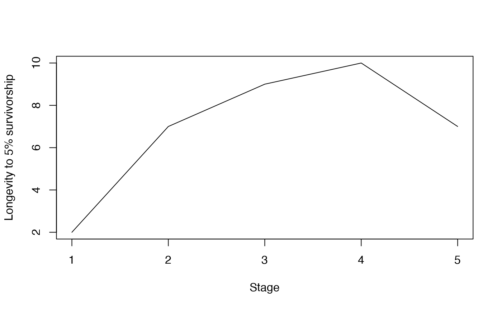

vignettes/a03_LifeHistoryTraits.Rmd
a03_LifeHistoryTraits.RmdThis vignette provides additional details on the functions in Rage for estimating life history traits. Life history describes the sequence and pattern of the key events in an organism’s life cycle, pertaining to the schedule of development, reproduction, and survival. By aggregating individual-level demographic rates into an MPM, we can then calculate a set of life history traits to describe the expected patterns for all individuals within the population. These calculations follow methods from Caswell (2001) and Morris & Doak (2003).
We’ll start by loading the Rage package and an example MPM included in the package called mpm1, which we’ll be using throughout this vignette.
library(Rage) # load Rage
data(mpm1) # load data object 'mpm1'
mpm1 # display the contents
#> $matU
#> seed small medium large dormant
#> seed 0.10 0.00 0.00 0.00 0.00
#> small 0.05 0.12 0.10 0.00 0.00
#> medium 0.00 0.35 0.12 0.23 0.12
#> large 0.00 0.03 0.28 0.52 0.10
#> dormant 0.00 0.00 0.16 0.11 0.17
#>
#> $matF
#> seed small medium large dormant
#> seed 0 0 17.9 45.6 0
#> small 0 0 0.0 0.0 0
#> medium 0 0 0.0 0.0 0
#> large 0 0 0.0 0.0 0
#> dormant 0 0 0.0 0.0 0Two life history traits pertaining to survival can be estimated using the functions life_expect() and longevity() in Rage. These do not involve reproduction and require only a U matrix (supplied to the function’s matU argument).
The function life_expect() estimates life expectancy, given as the mean and variance of the time to death. This is dependent on a starting stage, which is specified using the start argument. That is, the expected time to death will be different when calculated from the first stage (i.e., start = 1) compared to a later stage, which assumes survival to that stage. In the example MPM, life expectancy from the first stage (“seed”) is shorter than that from the second stage (“small”) due to the relatively low probability of survival in the seed stage, reducing the expected time to death.
life_expect(matU = mpm1$matU, start = 1) # life expectancy from "seed" stage
#> Warning: 'life_expect' is deprecated.
#> Use 'life_expect_mean' instead.
#> See help("Deprecated")
#> mean var
#> 1 1.251 19.24
life_expect(matU = mpm1$matU, start = 2) # life expectancy from "small" stage
#> Warning: 'life_expect' is deprecated.
#> Use 'life_expect_mean' instead.
#> See help("Deprecated")
#> mean var
#> 1 2.509 14.5It may sometimes be desirable to allow for multiple starting stage classes. For example, life expectancy from reproductive maturity (i.e. first reproduction) can be calculated while accounting for the possibility that an individual may first reproduce in one of several stages. In this case, the start argument can be specified as a vector (of the same length as the matrix dimension) giving the proportion of individuals starting in each stage. For example, life expectancy given 40% of individuals start from the “small” stage and 60% from the “medium” stage of the example MPM would be calculated as:
life_expect(matU = mpm1$matU, start = c(0,0.4,0.6,0,0))
#> Warning: 'life_expect' is deprecated.
#> Use 'life_expect_mean' instead.
#> See help("Deprecated")
#> mean var
#> 1 2.866 12.5The function longevity() estimates the time to which survivorship falls below a user-defined critical threshold, specified as a value (between 0 and 1) supplied to the lx_crit argument. The specifications regarding the start argument for life_expect() also applies to this function. Using the example MPM, the post-germination years until survivorship falls to below 5% would be calculated as:
longevity(matU = mpm1$matU, start = 2, lx_crit = 0.05)
#> [1] 7We can look at how longevity differs depending on the starting stage. With the example MPM, we see that longevity increases from 2 years to at 7 years after an individual germinates. Longevity is highest for the “medium” and “large” stages, but is the same for individuals starting in the “small” stage as those starting in the “dormant” stage.
longval <- c()
startvec <- c(1:dim(mpm1$matU)[1])
for(i in c(1:dim(mpm1$matU)[1])) {
longval[i] <- longevity(matU = mpm1$matU, start = startvec[i], lx_crit = 0.05)
}
plot(longval, type = "l", xlab = "Stage", ylab = "Longevity to 5% survivorship")
longval
#> [1] 2 7 9 10 7The function net_repro_rate() estimates the net reproductive rate, R0, or the number of offspring by which a newborn individual will produce over its lifetime.
net_repro_rate(matU = mpm1$matU, matR = mpm1$matF) # net reproductive rate (aggregate)
#> [1] 1.852text text
gen_time(matU = mpm1$matU, matR = mpm1$matF) # generation time (aggregate)
#> [1] 5.394text text
mature_age(matU = mpm1$matU, matR = mpm1$matF, start = 2) # post-germination years to first reproduction
#> small
#> 2.136text text
mature_prob(matU = mpm1$matU, matR = mpm1$matF, start = 2) # post-germination Pr(survival to first repro)
#> [1] 0.4318text text
mpm1$matF #Can see that medium and large stages are reproductive
#> seed small medium large dormant
#> seed 0 0 17.9 45.6 0
#> small 0 0 0.0 0.0 0
#> medium 0 0 0.0 0.0 0
#> large 0 0 0.0 0.0 0
#> dormant 0 0 0.0 0.0 0
mature_distrib(matU = mpm1$matU, start = 1L, repro_stages = c(FALSE,FALSE,TRUE,TRUE,FALSE))
#> seed small medium large dormant
#> 0.00000 0.00000 0.92105 0.07895 0.00000Other life history traits are calculated from a life table rather than an MPM, in which case we can first use the mpm_to_ group of functions to derive the necessary life table components: (st)age-specific survivorship (lx), survival probability (px), mortality hazard (hx), and reproduction (mx).
lx <- mpm_to_lx(matU = mpm1$matU, start = 2)
px <- mpm_to_px(matU = mpm1$matU, start = 2)
hx <- mpm_to_hx(matU = mpm1$matU, start = 2)
mx <- mpm_to_mx(matU = mpm1$matU, matR = mpm1$matF, start = 2)We can then calculate these
# then calculate life history traits
entropy_d(lx, mx) # Demetrius' entropy
#> [1] -1.358
entropy_k(lx) # Keyfitz' entropy
#> [1] 0.9482
shape_surv(lx) # shape of survival/mortality trajectory
#> [1] -0.02687
shape_rep(mx) # shape of fecundity trajectory
#> [1] -0.01506Caswell, H. (2001). Matrix Population Models: Construction, Analysis, and Interpretation. 2nd edition. Sinauer Associates, Sunderland, MA. ISBN-10: 0878930965
Morris, W. F. & Doak, D. F. (2003). Quantitative Conservation Biology: Theory and Practice of Population Viability Analysis. Sinauer Associates, Sunderland, MA. ISBN-10: 0878935460